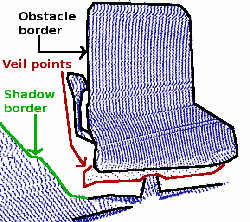

How to extract borders from range images
This tutorial demonstrates how to extract borders (traversals from foreground to background) from a range image. We are interested in three different kinds of points: object borders, which are the outermost visible points still belonging to an object, shadow borders, which are points in the background that adjoin occlusions, and veil points, interpolated points between the obstacle border and the shadow border, which are a typical phenomenon in 3D range data obtained by lidars.
{kind=link}
The code
First, create a file called, let’s say, range_image_border_extraction.cpp in your favorite
editor, and place the following code inside it:
1/* \author Bastian Steder */
2
3#include <iostream>
4
5#include <pcl/range_image/range_image.h>
6#include <pcl/io/pcd_io.h>
7#include <pcl/visualization/range_image_visualizer.h>
8#include <pcl/visualization/pcl_visualizer.h>
9#include <pcl/features/range_image_border_extractor.h>
10#include <pcl/console/parse.h>
11#include <pcl/common/file_io.h> // for getFilenameWithoutExtension
12
13typedef pcl::PointXYZ PointType;
14
15// --------------------
16// -----Parameters-----
17// --------------------
18float angular_resolution = 0.5f;
19pcl::RangeImage::CoordinateFrame coordinate_frame = pcl::RangeImage::CAMERA_FRAME;
20bool setUnseenToMaxRange = false;
21
22// --------------
23// -----Help-----
24// --------------
25void
26printUsage (const char* progName)
27{
28 std::cout << "\n\nUsage: "<<progName<<" [options] <scene.pcd>\n\n"
29 << "Options:\n"
30 << "-------------------------------------------\n"
31 << "-r <float> angular resolution in degrees (default "<<angular_resolution<<")\n"
32 << "-c <int> coordinate frame (default "<< (int)coordinate_frame<<")\n"
33 << "-m Treat all unseen points to max range\n"
34 << "-h this help\n"
35 << "\n\n";
36}
37
38// --------------
39// -----Main-----
40// --------------
41int
42main (int argc, char** argv)
43{
44 // --------------------------------------
45 // -----Parse Command Line Arguments-----
46 // --------------------------------------
47 if (pcl::console::find_argument (argc, argv, "-h") >= 0)
48 {
49 printUsage (argv[0]);
50 return 0;
51 }
52 if (pcl::console::find_argument (argc, argv, "-m") >= 0)
53 {
54 setUnseenToMaxRange = true;
55 std::cout << "Setting unseen values in range image to maximum range readings.\n";
56 }
57 int tmp_coordinate_frame;
58 if (pcl::console::parse (argc, argv, "-c", tmp_coordinate_frame) >= 0)
59 {
60 coordinate_frame = pcl::RangeImage::CoordinateFrame (tmp_coordinate_frame);
61 std::cout << "Using coordinate frame "<< (int)coordinate_frame<<".\n";
62 }
63 if (pcl::console::parse (argc, argv, "-r", angular_resolution) >= 0)
64 std::cout << "Setting angular resolution to "<<angular_resolution<<"deg.\n";
65 angular_resolution = pcl::deg2rad (angular_resolution);
66
67 // ------------------------------------------------------------------
68 // -----Read pcd file or create example point cloud if not given-----
69 // ------------------------------------------------------------------
70 pcl::PointCloud<PointType>::Ptr point_cloud_ptr (new pcl::PointCloud<PointType>);
71 pcl::PointCloud<PointType>& point_cloud = *point_cloud_ptr;
72 pcl::PointCloud<pcl::PointWithViewpoint> far_ranges;
73 Eigen::Affine3f scene_sensor_pose (Eigen::Affine3f::Identity ());
74 std::vector<int> pcd_filename_indices = pcl::console::parse_file_extension_argument (argc, argv, "pcd");
75 if (!pcd_filename_indices.empty ())
76 {
77 std::string filename = argv[pcd_filename_indices[0]];
78 if (pcl::io::loadPCDFile (filename, point_cloud) == -1)
79 {
80 std::cout << "Was not able to open file \""<<filename<<"\".\n";
81 printUsage (argv[0]);
82 return 0;
83 }
84 scene_sensor_pose = Eigen::Affine3f (Eigen::Translation3f (point_cloud.sensor_origin_[0],
85 point_cloud.sensor_origin_[1],
86 point_cloud.sensor_origin_[2])) *
87 Eigen::Affine3f (point_cloud.sensor_orientation_);
88
89 std::string far_ranges_filename = pcl::getFilenameWithoutExtension (filename)+"_far_ranges.pcd";
90 if (pcl::io::loadPCDFile(far_ranges_filename.c_str(), far_ranges) == -1)
91 std::cout << "Far ranges file \""<<far_ranges_filename<<"\" does not exists.\n";
92 }
93 else
94 {
95 std::cout << "\nNo *.pcd file given => Generating example point cloud.\n\n";
96 for (float x=-0.5f; x<=0.5f; x+=0.01f)
97 {
98 for (float y=-0.5f; y<=0.5f; y+=0.01f)
99 {
100 PointType point; point.x = x; point.y = y; point.z = 2.0f - y;
101 point_cloud.push_back (point);
102 }
103 }
104 point_cloud.width = point_cloud.size (); point_cloud.height = 1;
105 }
106
107 // -----------------------------------------------
108 // -----Create RangeImage from the PointCloud-----
109 // -----------------------------------------------
110 float noise_level = 0.0;
111 float min_range = 0.0f;
112 int border_size = 1;
113 pcl::RangeImage::Ptr range_image_ptr (new pcl::RangeImage);
114 pcl::RangeImage& range_image = *range_image_ptr;
115 range_image.createFromPointCloud (point_cloud, angular_resolution, pcl::deg2rad (360.0f), pcl::deg2rad (180.0f),
116 scene_sensor_pose, coordinate_frame, noise_level, min_range, border_size);
117 range_image.integrateFarRanges (far_ranges);
118 if (setUnseenToMaxRange)
119 range_image.setUnseenToMaxRange ();
120
121 // --------------------------------------------
122 // -----Open 3D viewer and add point cloud-----
123 // --------------------------------------------
124 pcl::visualization::PCLVisualizer viewer ("3D Viewer");
125 viewer.setBackgroundColor (1, 1, 1);
126 viewer.addCoordinateSystem (1.0f, "global");
127 pcl::visualization::PointCloudColorHandlerCustom<PointType> point_cloud_color_handler (point_cloud_ptr, 0, 0, 0);
128 viewer.addPointCloud (point_cloud_ptr, point_cloud_color_handler, "original point cloud");
129 //PointCloudColorHandlerCustom<pcl::PointWithRange> range_image_color_handler (range_image_ptr, 150, 150, 150);
130 //viewer.addPointCloud (range_image_ptr, range_image_color_handler, "range image");
131 //viewer.setPointCloudRenderingProperties (PCL_VISUALIZER_POINT_SIZE, 2, "range image");
132
133 // -------------------------
134 // -----Extract borders-----
135 // -------------------------
136 pcl::RangeImageBorderExtractor border_extractor (&range_image);
137 pcl::PointCloud<pcl::BorderDescription> border_descriptions;
138 border_extractor.compute (border_descriptions);
139
140 // ----------------------------------
141 // -----Show points in 3D viewer-----
142 // ----------------------------------
143 pcl::PointCloud<pcl::PointWithRange>::Ptr border_points_ptr(new pcl::PointCloud<pcl::PointWithRange>),
144 veil_points_ptr(new pcl::PointCloud<pcl::PointWithRange>),
145 shadow_points_ptr(new pcl::PointCloud<pcl::PointWithRange>);
146 pcl::PointCloud<pcl::PointWithRange>& border_points = *border_points_ptr,
147 & veil_points = * veil_points_ptr,
148 & shadow_points = *shadow_points_ptr;
149 for (int y=0; y< (int)range_image.height; ++y)
150 {
151 for (int x=0; x< (int)range_image.width; ++x)
152 {
153 if (border_descriptions[y*range_image.width + x].traits[pcl::BORDER_TRAIT__OBSTACLE_BORDER])
154 border_points.push_back (range_image[y*range_image.width + x]);
155 if (border_descriptions[y*range_image.width + x].traits[pcl::BORDER_TRAIT__VEIL_POINT])
156 veil_points.push_back (range_image[y*range_image.width + x]);
157 if (border_descriptions[y*range_image.width + x].traits[pcl::BORDER_TRAIT__SHADOW_BORDER])
158 shadow_points.push_back (range_image[y*range_image.width + x]);
159 }
160 }
161 pcl::visualization::PointCloudColorHandlerCustom<pcl::PointWithRange> border_points_color_handler (border_points_ptr, 0, 255, 0);
162 viewer.addPointCloud<pcl::PointWithRange> (border_points_ptr, border_points_color_handler, "border points");
163 viewer.setPointCloudRenderingProperties (pcl::visualization::PCL_VISUALIZER_POINT_SIZE, 7, "border points");
164 pcl::visualization::PointCloudColorHandlerCustom<pcl::PointWithRange> veil_points_color_handler (veil_points_ptr, 255, 0, 0);
165 viewer.addPointCloud<pcl::PointWithRange> (veil_points_ptr, veil_points_color_handler, "veil points");
166 viewer.setPointCloudRenderingProperties (pcl::visualization::PCL_VISUALIZER_POINT_SIZE, 7, "veil points");
167 pcl::visualization::PointCloudColorHandlerCustom<pcl::PointWithRange> shadow_points_color_handler (shadow_points_ptr, 0, 255, 255);
168 viewer.addPointCloud<pcl::PointWithRange> (shadow_points_ptr, shadow_points_color_handler, "shadow points");
169 viewer.setPointCloudRenderingProperties (pcl::visualization::PCL_VISUALIZER_POINT_SIZE, 7, "shadow points");
170
171 //-------------------------------------
172 // -----Show points on range image-----
173 // ------------------------------------
174 pcl::visualization::RangeImageVisualizer* range_image_borders_widget = NULL;
175 range_image_borders_widget =
176 pcl::visualization::RangeImageVisualizer::getRangeImageBordersWidget (range_image, -std::numeric_limits<float>::infinity (), std::numeric_limits<float>::infinity (), false,
177 border_descriptions, "Range image with borders");
178 // -------------------------------------
179
180
181 //--------------------
182 // -----Main loop-----
183 //--------------------
184 while (!viewer.wasStopped ())
185 {
186 range_image_borders_widget->spinOnce ();
187 viewer.spinOnce ();
188 pcl_sleep(0.01);
189 }
190}
Explanation
In the beginning we do command line parsing, read a point cloud from disc (or create it if not provided), create a range image and visualize it. All of these steps are already covered in the tutorial ‘Range Image Visualization’.
There is only one slight deviation. To extract the border information, it is important to differentiate between range image points that are unobserved and points that should have been observed but were out of range for the sensor. The latter typically marks a border, whereas unobserved points typically do not. Therefore it is useful to provide those measurements, if they are available. We expect to find an additional pcd file containing those values:
...
std::string far_ranges_filename = pcl::getFilenameWithoutExtension (filename)+"_far_ranges.pcd";
if (pcl::io::loadPCDFile(far_ranges_filename.c_str(), far_ranges) == -1)
std::cout << "Far ranges file \""<<far_ranges_filename<<"\" does not exists.\n";
...
they are later on integrated into the range image with
...
range_image.integrateFarRanges (far_ranges);
...
If those values are not available, the command line parameter -m can be used to assume, that all unobserved points are actually far ranges. This is done in the code with
...
if (setUnseenToMaxRange)
range_image.setUnseenToMaxRange ();
...
Now we come to the relevant part for the actual border extraction:
...
pcl::RangeImageBorderExtractor border_extractor (&range_image);
pcl::PointCloud<pcl::BorderDescription> border_descriptions;
border_extractor.compute (border_descriptions);
...
This creates the RangeImageBorderExtractor object, gives it the range image and calculates the border information, which is stored in border_descriptions (see common/include/pcl/point_types.h for details on the BorderDescription struct)
The remaining code is only for visualization purposes.
Compiling and running the program
Add the following lines to your CMakeLists.txt file:
1cmake_minimum_required(VERSION 3.5 FATAL_ERROR)
2
3project(range_image_border_extraction)
4
5find_package(PCL 1.3 REQUIRED)
6
7include_directories(${PCL_INCLUDE_DIRS})
8link_directories(${PCL_LIBRARY_DIRS})
9add_definitions(${PCL_DEFINITIONS})
10
11add_executable (range_image_border_extraction range_image_border_extraction.cpp)
12target_link_libraries (range_image_border_extraction ${PCL_LIBRARIES})
After you have made the executable, you can run it. Simply do:
$ ./range_image_border_extraction -m
This will use an autogenerated point cloud of a rectangle floating in space.
You can also try it with an actual point cloud on your disc:
$ ./range_image_border_extraction <point_cloud.pcd>
The extracted borders will be visualized as a range image widget and also in a 3D viewer.